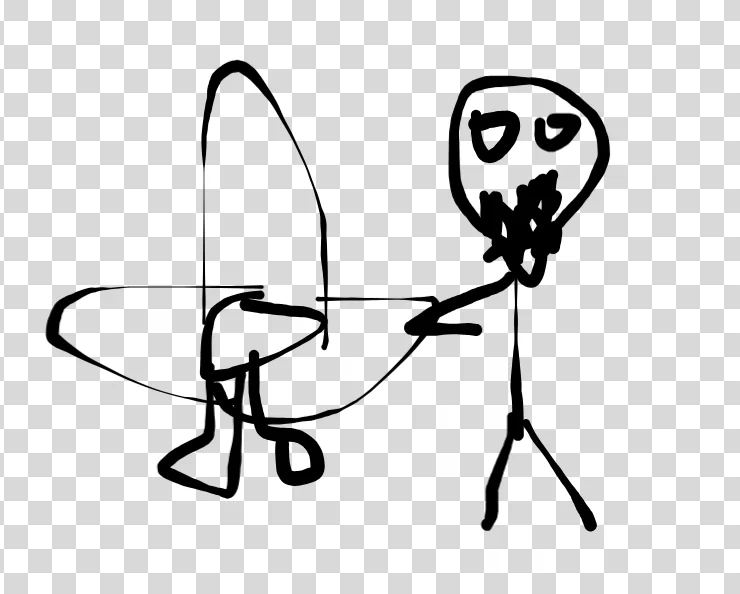
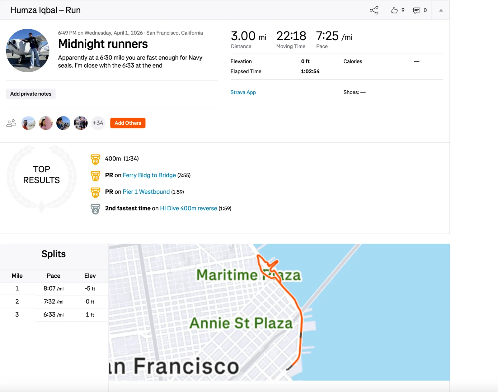
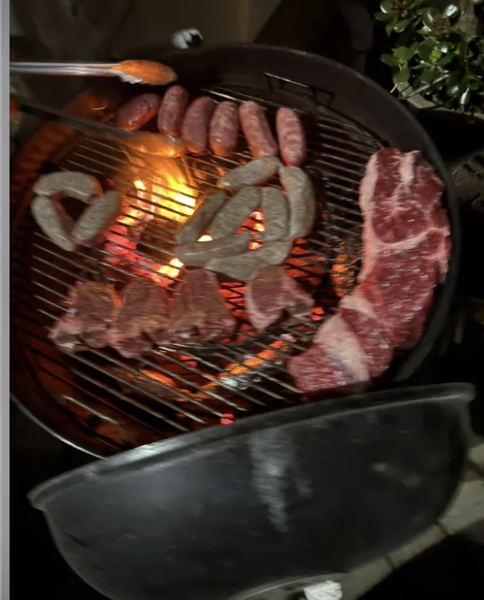
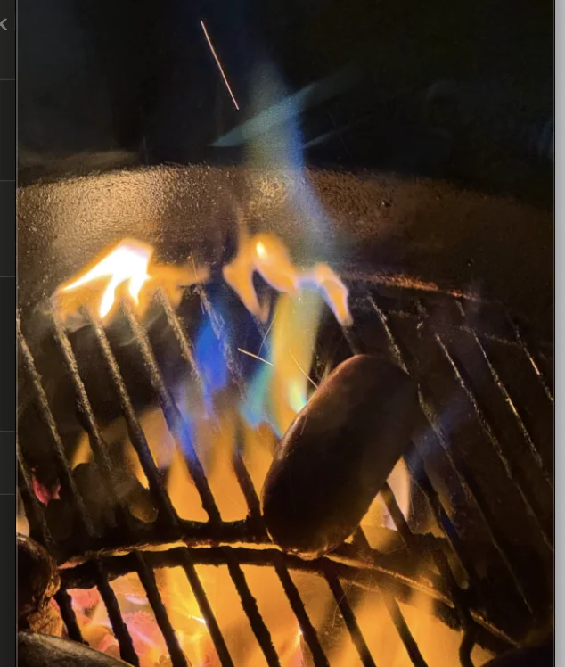
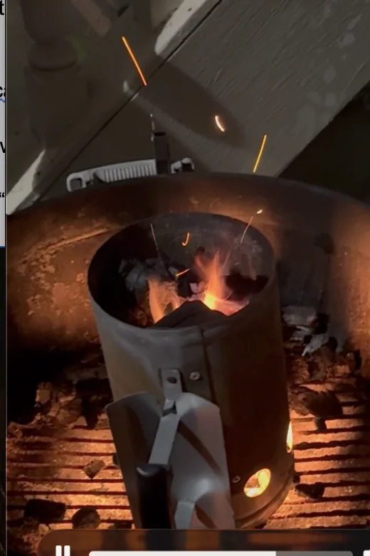
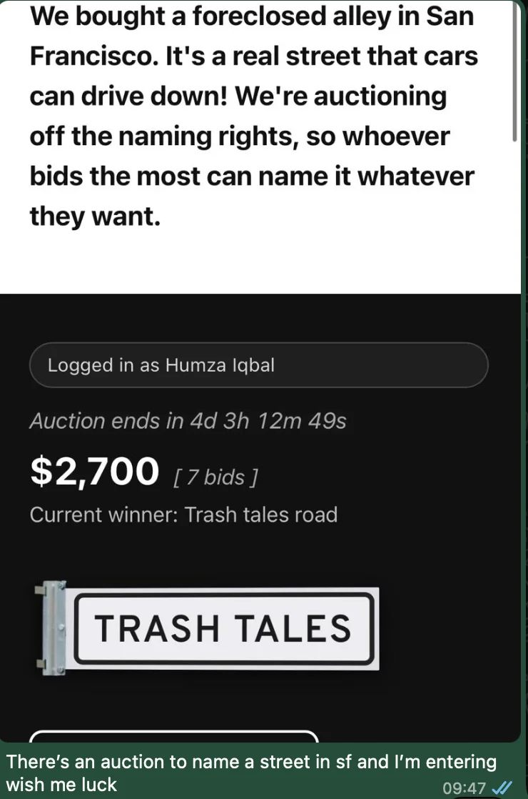
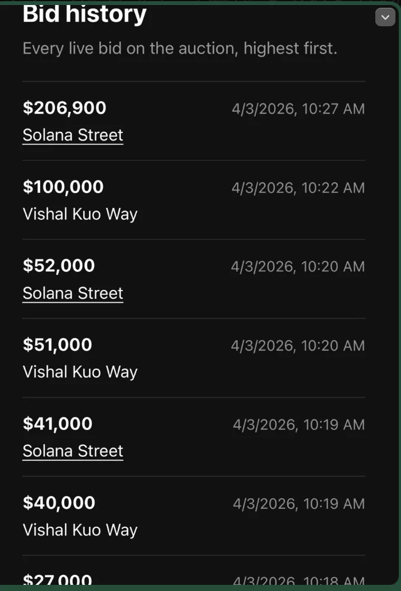
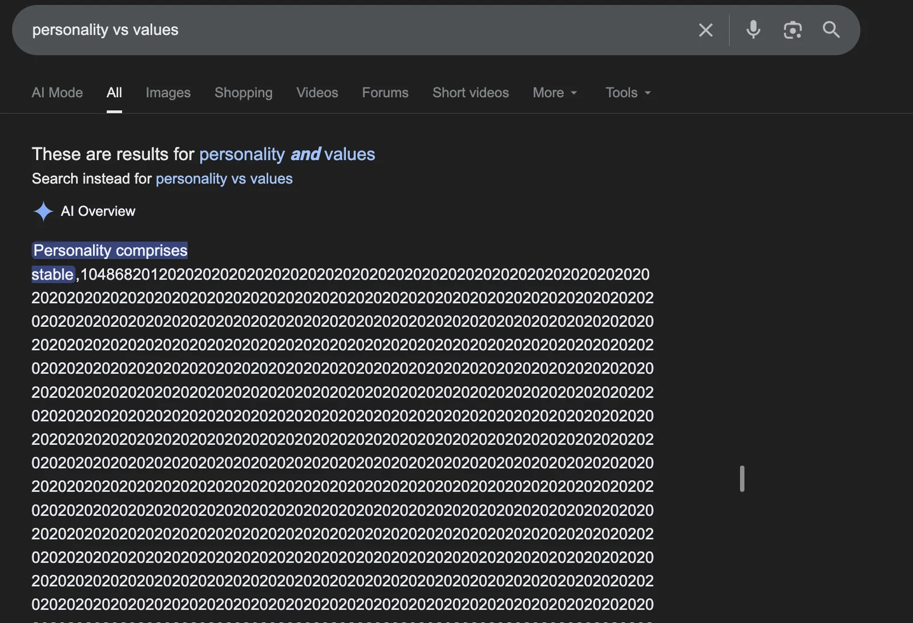

Shoutouts
Shoutout to “The Juggler” for doing his first solo flight! In honor of this I wanna try to recreate the photo you posted on insta in honor of that I wanted to recreate the photo you posted on insta to celebrate

Monday
Today I just stayed late at the office and worked
Tuesday
Before work I had my first session with my personal trainer. A lot of it was going over the basics like warmups, and basic exercises. This was mainly about establishing my baselines and seeing what I can do. As expected I definitely need to start with some low weights to start with. Right now the most I can do with a kettlebell squat is about 12lbs. I did some hamstring curls and the best I could get there was 6lbs.
One of the pieces of feedback I got about my appearance is that my arms are spindly and if I want to advance my goals this is one of the many things I need to fix about myself. Maybe someday in the future I can talk with a woman and she’ll think “Wow, this well dressed guy with good arms made a great first impression!”. I think with my training so far the first and the third could possibly be within reach but the second is still a long ways out.
After work I went on a walk with “Top of the Rope”. It was drizzling a little bit but we committed to walk and walk we did. We went from Mannys to Haight Ashbury and the great conversation more than made up for the less than great weather.
Later I got dinner with “The Dentist,” “La Tacqueria Royalty,” “The Enabler,” and one of “The Dentist’s” friends. I took them to Abu Salim to both flex the fact that people there know me by name and the fact that its one block away from where I live. I learned that there is some bougie beachside hotel in Vietnam where they will drive you in golf carts to go from one side of the hotel to the other. It’s too rich for my blood but it does in fact exist.
Wednesday
Today after work I went to Midnight Runners. For whatever reason I really got into the zone and decided to run faster than I normally would by myself.

My best mile was the one at 6:33 which gets me within spitting distance of the 6:30/mile Navy SEAL requirement. I have an aspiration of doing a sub 6 mile which now feels more realistic than it did before.
During the run I met a girl with a fun panda hat that she let me borrow for the run.
It reminded me how much fun it is to have fun hats (RIP the unicorn hat). I talked with one of the members of my fashion team and I was told that I could potentially wear another hat like that on special occasions or even once a week if I refer to it as my festive day. I’m too dialed into my fashion journey to wear something like this every day or just at any random point I want to despite the fact that it does bring me joy. But when I think about the hard work me and my team have accomplished to get here I can’t just throw it away. I have nicer clothes, I have nicer clothes.
A tangent that made this extra notable was the girl who had this hat worked in finance (I think M&A but I don’t remember for sure). I’ve heard most finance people tend to be extra normie so it’s nice to see the allegations aren’t always true. Perhaps just mostly true.
Thursday
I did my second personal training session before work today. For the first time in a while I did an assisted pull up. It used some machine that made it so I wasn’t lifting my whole body weight up. If I remember correctly I think it took about 50lbs off. I hope to get to the point where I can do a whole pull up unassisted but sadly that is not the point in the journey we are at yet.
Unfortunately the office was closed today so I had to work from home which sucked. I definitely feel a lot less productive when I’m in a focused environment like the office. It really just dials me in and I can focus on doing whatever needs doing. I could go to a cafe but it's annoying if I ever need to sync up with someone about something and I need to have a call. Thankfully it's just for one day and tomorrow I can go back to my nice office.
After work I go to a meat night at “The Juggler’s” horse with “The Fisherman,” “The Philosopher,” “The Quant,” “The Best,” “The Bartender,” “That’s nuts,” “The Mosher” and others. At this bar night I learned how to grill meat on a BBQ which I’ve never done before.
As part of this I first had to light a match using the back of a match box which I also had never done before. It took a bit but I got the technique down and eventually I managed to light the tumbleweed we used to start the grill.
Once that was done next we had to put some coals in and set the grill up so we can start cooking stuff over it. We grilled a wide variety of meats including hebrew national sausages (the best beef sausages don’t @ me), lamb, oxtail, chorizo, and more. The sausages were naturally pretty quick. You just toss em on, wait a couple minutes and they are good to go. The lamb and oxtail were definitely much more exercises in patience. Thanks to “The Mosher,” “The Juggler,” and “The Bartender” for tips on the different cuts of meat.



I think towards the end I started to get the hang of it and give people their delicious animal fleshies.
At one point “The Philosopher,” “The Fisherman,” “The Juggler,” “The Best,” and myself did a hot sauce challenge where we tried to eat a hot dog with as much of a certain brand of hot sauce as we could. There is supposedly some lore to this particular type of hot sauce but I don’t remember it. I think it involved “The Juggler” and “The Philosopher”. For now I’ll make up some headcanon as to the story.
Back in the pandemic they lived together with some others in a mansion in Vancouver (this part is actually true btw), and they found some hot sauce in a store one night during a long walk near Burnaby. They brought the hot sauce back and dared each other to see how much they could drink straight out of the bottle before giving up. It was a draw but they promised in the future there would be other hot sauce challenges.
I don’t know if that’s true or not but it sounds cool so that's my headcanon anyway.
Back to the truth here, we all tried putting hot sauce on these hot dogs and eating them. The rule was we have to eat whatever we put on. I have a bad spice tolerance but I really didn’t want to lose so I put more hot sauce on than what “The Philosopher” initially recommended I do. I was told by “The Philosopher" that I would win the challenge if I put on this much hot sauce and against all odds I keep the dog down.
Interestingly the spice didn’t actually kick in for the first minute or two but afterwards it was kinda painful for about 5 minutes. Thankfully I keep it all down and I don’t get spice mogged. “The Philosopher” said that because I succeeded at this he will make the next challenge harder, so look forward to more of Humza suffering with spice in future issues.
Friday
During work I learn that there is an auction to get to name a street in SF. For some background, some people bought a foreclosed alley and to fund a mural there they are selling the rights to name the street. It’s not a grand alley but I couldn’t resist the chance to participate in naming a street in SF so I get in when the auction is still relatively early with a bid

Imagine how cool it would be if there was a street in SF called Trash Tales Road. That would be so awesome!! Honestly I would pay $2700 for the privilege. I don’t travel a lot so I would be willing to forego my annual vacation for the chance to name a street. Sadly it took less than an hour for the price to go way beyond what I should reasonably pay for this

In case anyone is curious, the Vishal Kuo in question here actually did not bid to have the street named after himself, it was actually his spouse. I learned this later after people on Twitter were mocking this guy for being narcissistic.
Like I could try to outbid here but even I have to admit that would be stupid :(. Sigh maybe next time Trash Tales Road can still be a reality.
After work I hosted a game night with “The Mosher,” “The Quant,” and “The Pickleballer”. We play a game called Space Base courtesy of “The Mosher”. The goal in this game is to build up an economy based on space stations. You roll dice and depending on what stations you have you can get money and other rewards. You can use money and these other rewards to get victory points and the person with the highest # wins.
I almost win until “The Mosher” pulls out some advanced wizardry that I like to think only someone who has played the game before like he has could pull off. I was stupended, astounded, and zoblorxed that he managed to get like 25 victory points out of the roughly 40 needed to win in a single turn thanks to his engine building skills.
Saturday
Originally I was going to go to Marina Run Club before trash pickup but when I got there I realized I didn’t really feel like talking with any of the people there. There wasn’t anyone I knew like “Top of the Rope” or “The Meance”; instead only strangers. And not the hot Sri Lankan girl I tell myself I’ll try to make a move on. Usually I’m quite keen to talk to new people but today I oddly didn’t feel like it and decided instead to go on a nice walk from The Marina to The Mission for trash pickup.
I like running and all but sometimes a nice walk really hits. When I run I always feel the need to go faster but with walking I can slow down and just enjoy the nice day. I can stop and stare at how nice Twin Peaks looks, I can take a nice breath of the crisp morning air, I can literally stop and smell the flowers.
Shortly thereafter I do trash pickup with “The Ravenkeeper,” “The Writer,” “The Notetaker,” “Not a Matcha Bitch,” “The Politician” and others. As part of a unique 1:1 with “The Ravenkeeper,” rather than me treating her to a meal instead we do a bit that we’ve long since talked about but haven’t done of going to as many trash pickups as we can in a day. We settle on a plan that takes us to four separate trash pickups: The standard Saturday Mission trash pickup, a different Mission trash pickup, a Fillmore pickup, and a Chinatown pickup.
For the first 3 pickups we’re joined by two other people who don’t have newsletter nicknames but if you go to trash pickup regularly I’ll tell you who they are One of them is “The Ravenkeeper’s” friend and the other well I don’t really know how to describe him without telling you his name so yeah just ask me or don’t or something I don’t know. I’m hungry as I’m writing this.
The two Mission trash pickups kinda bleed into each other so it's hard for me to describe them meaningfully. The nice thing about doing other trash pickups is I can more effectively lie and say it's my first time picking up trash. Also in honor of me doing this with “The Ravenkeeper” I bring out an old bit I did way back last year where I tried to convince her I had a twin brother named Imran and pretend to be Imran at these trash pickups. I told the lead at the second Mission trash pickup that I decided to do this because my parents told me trash pickups are what the poors do. I’m not quite sure what his reaction was to that but it’s fine, sometimes I need to indulge myself. Sorry about that Mr. South east mission trash pickup lead, you’re a real one man.
Afterwards we quickly went to The Fillmore for the 3rd pickup. The organizer here is really nice and patiently explains the rules of the pickup. That is the downside I pay for saying it’s my first time but you know I gotta stack my bits here. Why only do a bunch of trash pickups in a day when I could lie and say it's my first time for no real reason beyond my own amusement.
Since we had time between this pickup and the next we get lunch at a restaurant in Japantown with some good curry. We discuss the Delve scandal which for those of you unaware is about a YC startup that faked giving SOC II audits to customers and imploded. One of “The Ravenkeeper’s” friends used to work with these people and he said he is not surprised they would do something like that.
At this point it was just me and “The Ravenkeeper” left as we headed to our final trash pickup in Chinatown. I stopped doing the bit of it being my first time because I didn’t really want to be explained the rules of a trash pickup again and nobody asked me for my name so I was just like “OK”. We grabbed our stuff and picked up trash. One thing I really appreciate about “The Ravenkeeper” is that she is willing to fight for trash and I can be competitive with her. With some people I feel bad if I sprint to some trash they are about to pick up but with her I can go all out which makes these pickups a lot more entertaining.
Throughout the day we talk a bunch about dating and she asks me an interesting question of what adjectives would I want other people to use to describe me. Considering my personality I have to use funny, considering how essential jokes are as my form of self expression and connecting with others with curiosity and reliability probably rounding it out. I want to be seen as someone reliable, that people can count on. And someone curious and genuinely interested in others. I suppose this is a useful question for thinking about the people you are compatible with.
She also asked if personality or values are more important to me in dating. She mentioned for example that values are really important to her especially in the long term. I’ll admit I’ve been thinking a lot more about personality than values. Ie if someone is curious, down to do things, outgoing, friendly etc. I’ve thought less about values considering that one thing I’ve been wondering and actively thinking about is how much I care about religion in a partner. It’s been much more of an evolving thought as to what long term values I really care about considering my own relationship with religion and what I want a partner to embody. At the moment my answer is that I don’t necessarily care if my partner is Muslim. I’d appreciate cultural participation but nothing beyond that.
As a tangent here is a fun Google AI result when I googled “personality vs values” (note I couldn’t reproduce this when I tried again though)

After the last trash pickup I met up with “The Quant” and walked around for a while. We went to IKEA and he tried the IKEA hotdogs. They’re about as cheap as Costco hotdogs but if the Costco hotdogs are a 10 out of 10 then the IKEA hotdogs are a 6.
Later I was wandering around in Dolores Park by myself for a bit wondering if I would run into anyone I know and low and behold I run into “Breaking it Down,” “La Tacqueria Royalty,” and “The Eagle has flown the nest”. We hang out for a while and then go to Chinese BBQ skewers over in SOMA. Once we’re there we’re joined by “The Enabler” and another reader of mine that knows “Breaking it Down”.
Alright if you’re reading this considering I’ve only met you 3 times I know a lot less about you than most (if not all) of the other readers of this newsletter which is gonna make coming up with a nickname really hard. But we shall try. Hmm what should I call you. I’m gonna do something I don’t normally do and think of this on the spot. Ok what do I know about you? You did improv at one point. Well that won’t do because me, “Mr. Green flag,” and “The Fisherman” have all done that. I met you at trash pickup. The list of people I’ve met there is too long to list. You’re from South Carolina. Eh thats ok but I can’t come up with anything good from that.. You go to raves. Oh actually I remember you went to a cave rave once with “The Slosher” (I was gonna go to this but I went on a Europe trip last minute last year instead). Alright maybe I’ll call you “Rave in the Cave”. Not my best but not my worst nickname either.
Ok so lets rewrite the above now … We hang out for a while and then go to Chinese BBQ skewers over in SOMA. Once we’re there we’re joined by “The Enabler” and “Rave in the Cave” who is apparently friends with “Breaking it Down”. Small world! We get a bunch of meat and hang out for a while while “Breaking it Down” tries to last minute get tickets to a rave which is entertaining to watch. The tickets get secured and “Rave in the Cave” and “Breaking it Down” head off on their rave adventures which are outside of the scope of this newsletter and left as an exercise for the reader.
Meanwhile, “The Enabler,” “La Tacqueria Royalty,” “The Eagle has flown the nest”, and I head to Butter (a bar also in SOMA). While there we run into a group of cute girls. “The Enabler” and “The Eagle has flown the nest” encourage me and “La Tacqueria Royalty” to talk to them. Initially we’re hesitant; “The Eagle has flown the nest” said he thought I would be great at this because I’m outgoing. I say in response that I’m great talking to people as friends but not like this and then he tells me it’s exactly the same thing. I then say “I know how to do that” and I go and talk to this group of people with “La Tacqueria Royalty” joining soon after. We don’t get any #s out of it but it definitely built confidence that I can do this since I don’t usually hit up women at a bar. And by usually I mean ever.
After that I try again later with some other women. The conversation is much briefer and we don't really have a lot to talk about but considering that I wouldn’t have done this without that confidence boost from before I consider this a W.
The night goes on and we continue dancing at Butter. “The Eagle has flown the nest’s” girlfriend comes along with some other Google folks. Unfortunately as the night goes on and more people come to this bar I get overstimulated and the lack of ability to hear conversations and the constant swarm of people trying to get by me makes staying there unappetizing. By midnight I decided to head home.
Sunday
The day begins with trash pickup with “The Menace," “The Raja of Rhythm,” “The Yogi,” “The Notetaker” and others. After trash pickup me and “The Raja of Rhythm” head over to Dolores Park where it’s really crowded because of hunky Jesus (a competition in Dolores park where guys dress up as well … hunky Jesus). I don’t stick around and instead go to play Blood on the Clock Tower (BoTC as it's known by the community). For those unfamiliar it’s a social deduction game like Avalon or Secret Hitler but much more involved.
After that I walk around for a while and decide to head home and chill and do a bit of work. I thought that would be the end of my day except “The Eagle has flown the nest” mentions spontaneously wanting to get Abu Salim in a group chat and I take him up on the offer. We met for an impromptu 1:1 which was really nice because we had never hung out 1:1 before. I learned more about the Philadelphia baseball team (The Phillies). I also tried to persuade him on why solo traveling is a lot of fun since he had never done it before.
From there I go home and continue working since I really want to make progress on something and put off writing the newsletter much to the disappointment of some of my unpaying subscribers.